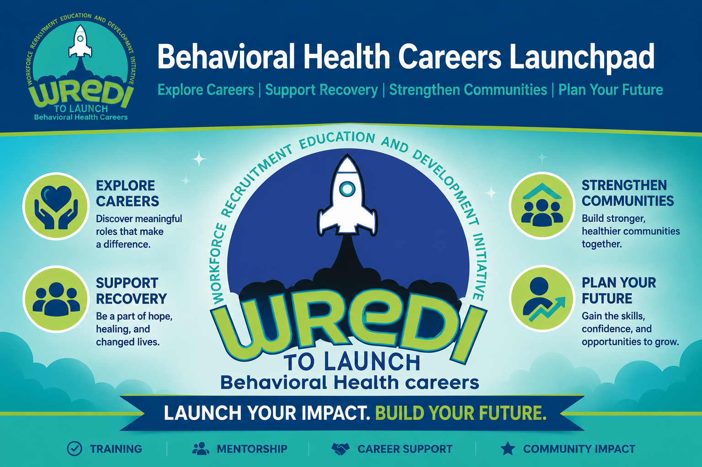

⌕
Explore Careers
Discover meaningful roles, daily responsibilities, work settings, and pathways into behavioral health.

Explore roles, compare the kind of work each pathway involves, discover where your interests may fit, and leave with a practical next step. This is a career launchpad—not a class, gradebook, or required sequence.
Use these themes to orient your exploration. You may connect with more than one.
Discover meaningful roles, daily responsibilities, work settings, and pathways into behavioral health.
Explore roles centered on hope, recovery, peer support, counseling, and helping people move toward their goals.
Learn about outreach, resource navigation, case management, education, advocacy, and community connection.
Turn what you learn into a concrete next step: skills to build, requirements to verify, and opportunities to pursue.
These pathway summaries were adapted from the original Behavioral Health Careers Canvas content. Open any card to see what the role emphasizes and what to explore next.
Outreach, health education, referrals, advocacy, trust-building, and resource navigation.
Community Health Workers help individuals and families understand health information, locate services, reduce barriers, connect with community resources, and communicate with healthcare and social-service organizations.
Recovery, hope, self-determination, strengths, advocacy, and professional peer support.
Mental Health Peer Specialists use qualifying lived experience with mental health recovery in a trained, intentional, and professional way to support others, encourage self-advocacy, connect people with resources, and reinforce hope.
Substance use recovery support, hope, lived experience, community connection, and recovery planning.
Recovery Support Peer Specialists use qualifying lived experience with substance use recovery to support people working toward recovery and wellness while emphasizing hope, personal choice, self-advocacy, and multiple pathways to recovery.
Assessment, treatment planning, counseling, ethics, documentation, case management, and clinical practice.
The original course distinguishes this pathway from peer support: an LCDC works in a clinical substance-use counseling role and may participate in intake, assessment, treatment planning, individual or group counseling, education, documentation, and care coordination.
Direct care, observation, safety, structured activities, documentation, and teamwork.
Psychiatric Technicians provide direct, hands-on support to people receiving mental health, developmental-disability, substance use, crisis, residential, or hospital-based services.
Case management, skills training, rehabilitation, crisis support, care coordination, and documentation.
QMHPs commonly support people through behavioral health rehabilitation, skills training, case management, care coordination, crisis support, advocacy, documentation, and community resource navigation.
Direct support, observation, documentation, safety, ethics, communication, and team-based care.
Behavioral Health Technicians provide direct support to people receiving mental health, substance use, residential, crisis, or community-based services and work as part of a larger provider team.
This is an exploration tool—not a test. Choose every statement that feels true, then see which pathways rise to the top.
You do not need to map your whole career today. Capture what stands out, what you need to verify, and one action you can take next.
Which role or roles do you want to explore further?
List education, credential, experience, or employer requirements you still need to confirm.
Choose one realistic action you can complete soon.
The original course included these AAHI career and learning resources. They work well here as optional next-step tools.
Search healthcare jobs, save opportunities, track applications, build your résumé, and connect with Career Services.
Open CareerConnect ↗Browse curated allied-health learning resources, clinical references, study tools, certification resources, videos, and career information.
Open Online Library ↗If a behavioral health career feels like the right direction, explore Avicenna Allied Health Institute as one possible education and training option.
Use the career matcher above, open the Articulate career lesson in any pathway card, and compare the role with your interests before choosing a training path.
Return to Find Your Fit ↑